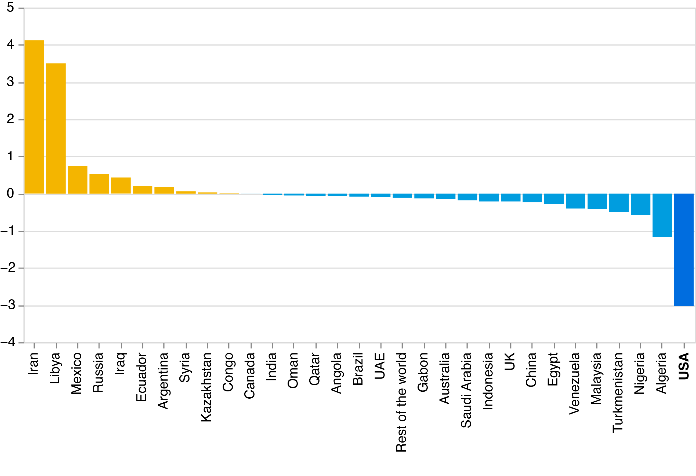

US leads post-COVID reduction in gas flaring
By Kunle Falayi
The U.S., one of the top contributors to gas flaring globally, reduced its gas flaring by more than 3 billion cubic meters in 2021, data from the World Bank Gas Flaring Tracker has shown. It is the largest gas flaring reduction after the year COVID disrupted supply chain across the world and led to a 25 per cent dip in the demand for gas up according to estimation by auditing giant, Deloitte. In 2020, the U.S. flared almost 12 billion cubic meters of gas in 2020.
Change in 2020 and 2021 flaring levels (billion cubic meters)
 Source: World Bank's Global Gas Flaring Data | Made with AltairEven though the data shows that Iran made the highest increase in post-COVID gas flaring levels, Russia maintains the lead as the highest contributor globally, burning over 25 billion m3 of gas in the atmosphere in 2021. An estimated 143 billion m3 of gas worth $145 billion was flared in 2021, according to the World Bank.
Amount of gas flared in 2021 (in billion m3)
Click countries for details
World Bank's 2022 Global Gas Flaring Data shows the U.S. gas flaring levels spiked in 2019 to 17.29 billion. The oil and gas industry says the practice, which introduces pollutants like sulfur dioxide and generates greenhouse gases, is unavoidable. Excess gas is flared to release pressure and prevent the risk of explosions at oil exploration sites.
According to the World Bank, its gas flaring tracker is the only global and independent indicator of routine gas flaring, allowing the global body to “monitor global flaring levels and track progress toward our goal of Zero Routine Flaring by 2030.”
Even though the data shows that Iran made the highest increase in post-COVID gas flaring levels, Russia maintains the lead as the highest contributor globally, burning over 25 billion m3 of gas in the atmosphere in 2021.
Six countries were responsible for over 64 percent of the volume, the data shows. The countries are Russia, Iraq, Iran, U.S., Algeria, Venezuela and Nigeria.
The World Bank attributes the reduction in gas flaring in the U.S. to drop in oil production and construction of gas infrastructure which limited the need to flare the excess.